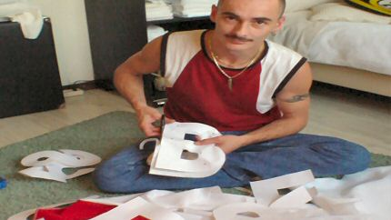
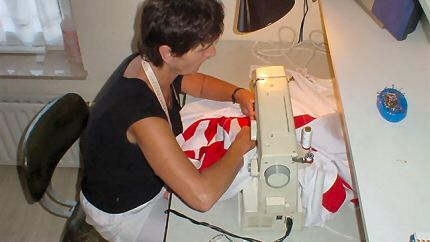
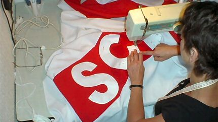
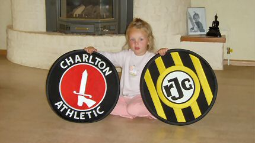
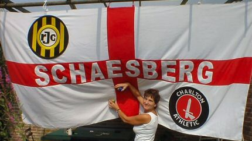
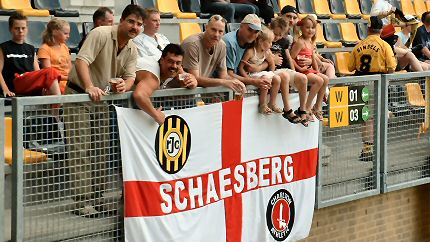
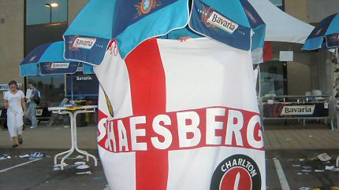

|
The making of the Roda JC - Charlton Athletic Flag |
The
making of the Roda JC - Charlton Athletic Flag

Roland is cutting out the letters.

A mom is sewing the letters and attaches them to the St.
George.

What a carefull mother....

The huge badges that will be mounted onto the banner.

Ready!!!!

The inauguration of the flag in the Roda-stadium.

Beer is making people inventive ;-)
This flags destination is not only the Parkstad Limburg
Stadium
Kerkrade but will show up at the Valley once and a while, first at
november 27th. 100% anti-Chelski!